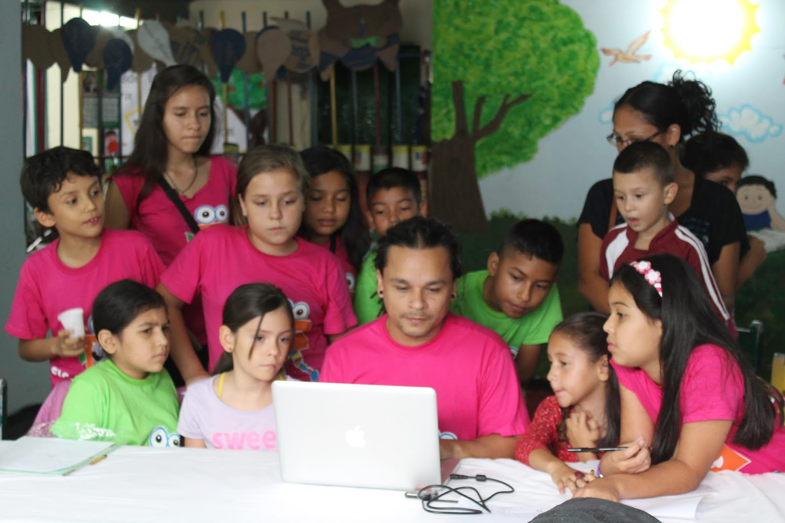
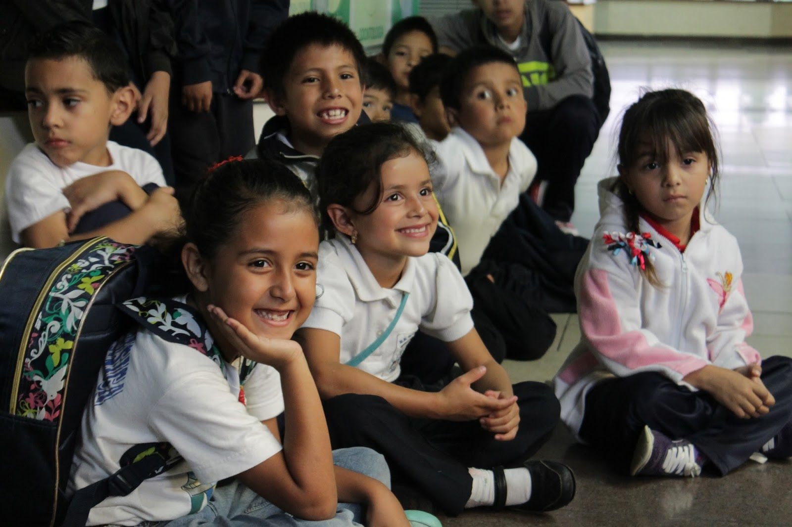
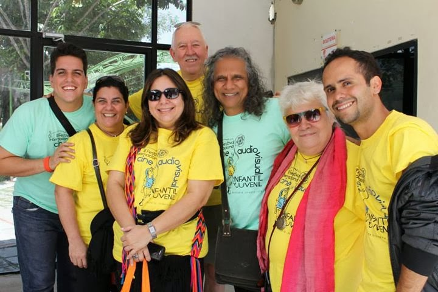
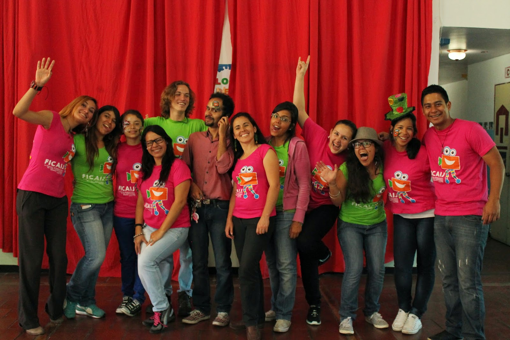
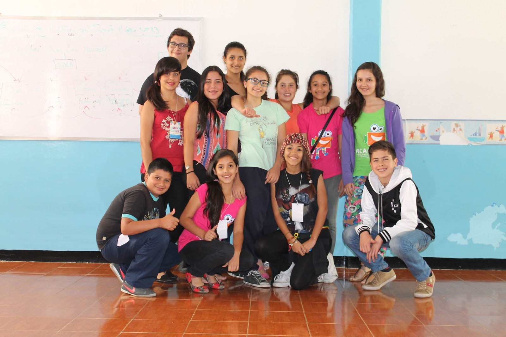
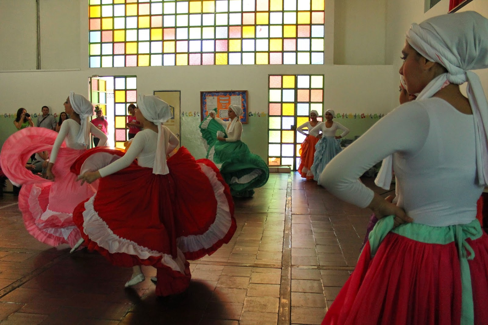
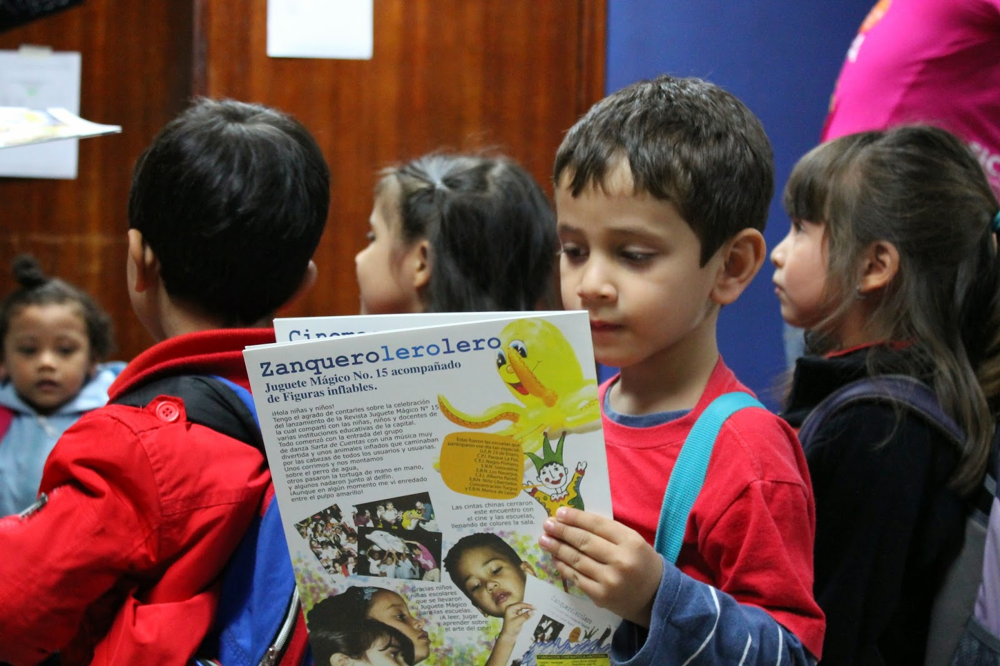

CO-CREAMOS SOLUCIONES CON LAS COMUNIDADES
Somos BURA — "maíz" en lengua indígena. Desde 2010 usamos la creatividad, los medios, lo digital y la tecnología como herramientas para resolver problemas sociocomunitarios, para, por y con gente joven y sus familias.

Somos una Plataforma de Innovación Colaborativa para la Resolución de Problemas Sociocomunitarios.
No somos una agencia tradicional: somos una infraestructura de cambio social. Investigamos problemas reales, activamos capacidades, creamos contenidos y tecnologías con propósito, y amplificamos las voces y soluciones que importan.
Investigamos, diseñamos e implementamos soluciones donde jóvenes, familias y comunidades son protagonistas activos de la transformación, usando creatividad, medios, tecnología e inteligencia artificial como herramientas de activación.
Expresión Ixoye
Grupo de artes escénicas y audiovisuales. Nace el festival FICAIJ.
BURA Audiovisual
Productora con gráfica pop: contenido para y con gente joven.
BURA Agency
Agencia de acción e investigación. Edutainment para las generaciones Z y Alfa.
Plataforma BURA
Innovación colaborativa para la resolución de problemas sociocomunitarios.
Cinco áreas de trabajo que se siembran juntas: investigamos, formamos, acompañamos, producimos y exhibimos — siempre con las comunidades como protagonistas.
Investigación
Estudiamos las relaciones de la gente joven con los medios, lo digital y la tecnología para actuar con rigor y agilidad.
Formación
Talleres y experiencias que convierten audiencias en creadores: audiencias críticas, activas y productivas.
Asesoría y acompañamiento
Acompañamos a organizaciones, escuelas y comunidades en sus propios procesos y proyectos.
Producción
Creamos contenido audiovisual y transmedia desde el alma, el corazón y el pensamiento.
Exhibición y distribución
Llevamos el cine y el audiovisual a salas, escuelas y plazas. El FICAIJ es nuestro brazo de exhibición.



FICAIJ. El cine que hacen las infancias
El Festival Internacional de Cine y Audiovisual Infantil y Juvenil reúne cada año 1.437 audiovisuales de más de 80 países, con 358 jurados — muchos de ellos niños, niñas y jóvenes. Salas llenas, talleres, jurados infantiles y cine hecho para, por y con las infancias.
Ver el festival








¡Queremos contarle al mundo lo que las comunidades pueden sembrar! Si eres joven creador, docente, organización o aliado, escríbenos.